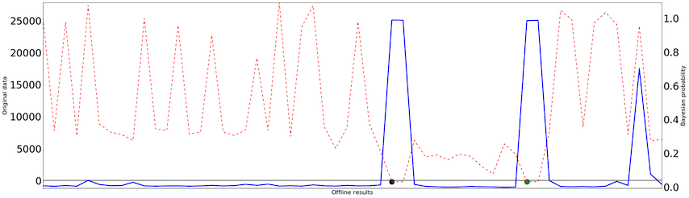
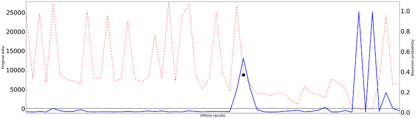

Toggle navigation
{{ config.APP_NAME }}
Home
Base
Type
Form
Map
Map and API
{% if not session.logged_in %}
log in
{% else %}
log out
{% endif %}
基本分析
时序划分
模式筛选
参数设定
地理分析
帮助
基本分析
地理事件模式选择主要是分为群体事件模式划分（目的是通过聚合具有相同性质意义的地理位置，为用户提供热度分析，选址分析以及迁移分析等的基础）以及单例事件序列划分的过程。
地理范围分布状况
示例确定
数据集选择
出租车轨迹数据
上报数据
option1
数据确定
id
taxi_id
lat
lng
user
date
{% for greeting in original_list %}
{{ greeting.id}}
{{ greeting.taxi_id}}
{{ greeting.lng}}
{{ greeting.lat}}
{{ greeting.user}}
{{ greeting.create_at}}
{% endfor %}
数据的基本分布
时序划分
时间维度下统计分布 
1.数据划分算法说明：
根据数据自身的特点，采用贝叶斯概率框架对数据变点进行检测，划分数据阶段，从而起到分段数据分析的效果。
2.数据划分算法用途：
波动性太强的数据，直接进行数据分析影响较大，采用划分后的分段数据，利于数据特征筛选。
下一步>>
数据确定
id
user_id
lat
lng
date
{% for greeting in sec_list %}
{{ greeting.id}}
{{ greeting.taxi_id}}
{{ greeting.lng}}
{{ greeting.lat}}
{{ greeting.create_at}}
{% endfor %}
数据的基本分布
时序划分
时间维度下统计分布 
1.数据划分算法说明：
根据数据自身的特点，采用贝叶斯概率框架对数据变点进行检测，划分数据阶段，从而起到分段数据分析的效果。
2.数据划分算法用途：
波动性太强的数据，直接进行数据分析影响较大，采用划分后的分段数据，利于数据特征筛选。
下一步>>